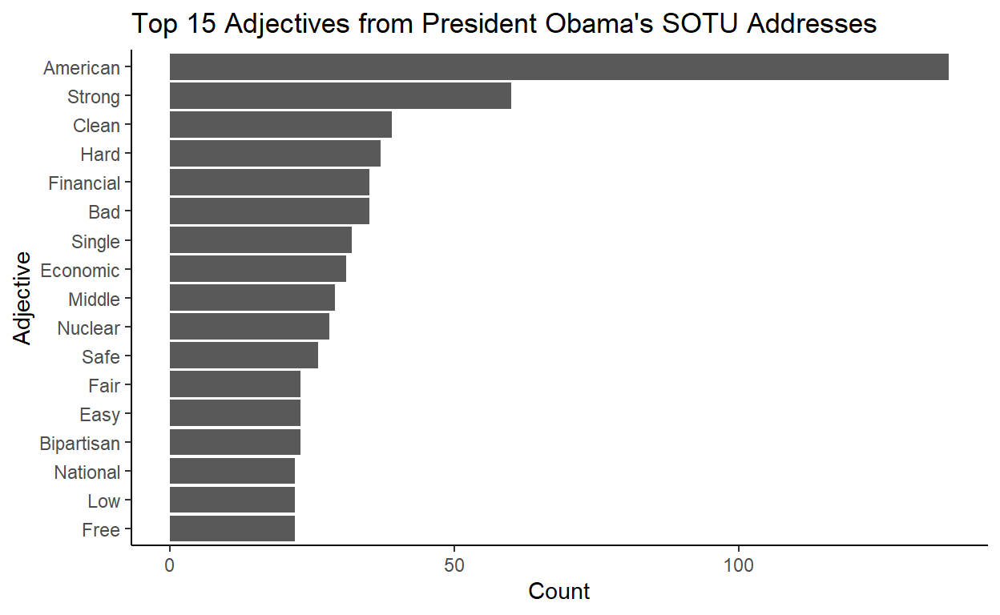

Indexing tip for {spacyr}
June Choe ![]()
The {spacyr} package is an R wrapper for Python’s spaCy package, powered by {reticulate}. Although it’s been around for over 3 years, it doesn’t seem to have really been picked up by R users.1 I actually think this makes sense since what makes spaCy so great is its object-oriented approach to NLP (which Python is good at). But perhaps more importantly, a good portion of data wrangling in spaCy is reducible to operating on vectors of such tokens, and I think that comes pretty naturally for R users with a functional programming background.2 So my guess is that since spaCy is accessible to R users, {spacyr} isn’t that widely used.
But with that said, I like to make my workflow as R-centered as possible and I think there’s still value in {spacyr} at least for very simple, exploratory analysis of text. The results being returned in a tidy format is a huge plus, and it doesn’t seem to sacrifice much speed.
There’s a good guide to using {spacyr} in the CRAN vignette which covers pretty much everything you need to know if you’re already familiar with spaCy (and if you aren’t, there’s a great cheatsheet from DataCamp).
Everything I just said above was just a whole lot of background information. What I really want to do here to contribute to the discussion around {spacyr} by sharing a tip for analyzing dependency relations from the output of spacy_parse(), which is {spacyr}’s main function that combines both the model-loading and text-processing stages of spaCy.
For illustration, I’ll be using the 8 State of the Union addresses by President Barack Obama from 2009-2016, which comes from the {sotu} package.
library(sotu)
doc <- tail(sotu::sotu_text, 8)
# First 100 characters of each speech
strtrim(doc, 100)
[1] "Madam Speaker, Mr. Vice President, Members of Congress, the First Lady of the United States--she's a"
[2] "Madam Speaker, Vice President Biden, Members of Congress, distinguished guests, and fellow Americans"
[3] "Mr. Speaker, Mr. Vice President, Members of Congress, distinguished guests, and fellow Americans: To"
[4] "Mr. Speaker, Mr. Vice President, Members of Congress, distinguished guests, and fellow Americans: La"
[5] "Please, everybody, have a seat. Mr. Speaker, Mr. Vice President, Members of Congress, fellow America"
[6] "The President. Mr. Speaker, Mr. Vice President, Members of Congress, my fellow Americans: Today in A"
[7] "The President. Mr. Speaker, Mr. Vice President, Members of Congress, my fellow Americans: We are 15 "
[8] "Thank you. Mr. Speaker, Mr. Vice President, Members of Congress, my fellow Americans: Tonight marks "We can pass this document to spacy_parse() to get back a dataframe of tokens and their attributes in tidy format, where each row (observation) is a token.3
parsed <- spacy_parse(doc, dep = TRUE, entity = FALSE)
head(parsed, 10)
| doc_id | sentence_id | token_id | token | lemma | pos | head_token_id | dep_rel |
|---|---|---|---|---|---|---|---|
| text1 | 1 | 1 | Madam | Madam | PROPN | 2 | compound |
| text1 | 1 | 2 | Speaker | Speaker | PROPN | 2 | ROOT |
| text1 | 1 | 3 | , | , | PUNCT | 2 | punct |
| text1 | 1 | 4 | Mr. | Mr. | PROPN | 6 | compound |
| text1 | 1 | 5 | Vice | Vice | PROPN | 6 | compound |
| text1 | 1 | 6 | President | President | PROPN | 2 | appos |
| text1 | 1 | 7 | , | , | PUNCT | 6 | punct |
| text1 | 1 | 8 | Members | Members | PROPN | 6 | appos |
| text1 | 1 | 9 | of | of | ADP | 8 | prep |
| text1 | 1 | 10 | Congress | Congress | PROPN | 9 | pobj |
This output format is great for plotting in R with the familiar packages. For example, we can make a bar plot of top adjectives used by Obama in his SOTU addresses with minimal changes to the output.
# Load tidytext package for stopwords
library(tidytext)
parsed %>%
filter(pos == "ADJ",
str_detect(lemma, "^[:alpha:].*[:alpha:]$"),
!lemma %in% tidytext::stop_words$word) %>%
count(lemma) %>%
mutate(lemma = fct_reorder(str_to_title(lemma), n)) %>%
top_n(15) %>%
ggplot(aes(lemma, n)) +
geom_col() +
coord_flip() +
labs(title = "Top 15 Adjectives from President Obama's SOTU Addresses",
x = "Adjective", y = "Count") +
theme_classic()

The Challenge
But what if we want to dig a little deeper in our analysis of adjectives? What if, for example, we were interested in the adjectives that were used to describe “America”
Because we set dep = TRUE when we called spacy_parse() earlier, we have information about dependencies in the dep_rel column and the head_token_id column. To be more precise, dep_rel is the .dep_ attribute from spaCy and head_token_id is the row index of the head token (.head attribute from spaCy) that is unique to the spacy_parse() output.
For example, let’s look at the the 298th sentence from Obama’s third SOTU address:
example_sentence <- parsed %>%
filter(doc_id == "text3", sentence_id == 298) %>%
pull(token) %>%
str_c(collapse = " ") %>%
str_remove_all(" (?=[:punct:])")
example_sentence
[1] "Now, we've made great strides over the last 2 years in using technology and getting rid of waste."And here’s a visualization of the dependency parse made with displaCy. Sadly, displaCy is not a part of {spacyr}, so I’m just calling Python here using {reticulate}.
‘’
Basically, the task here is to find words like “competitive” in the example sentence above where the token is an adjective and its head is the word “America”, but it turns out harder than it seems.
The output of spacy_parse is set up such that every sentence stands on their own. More specifically speaking, the indices stored in token_id and head_token_id are local indices relative to each sentence.4 So while there are a total of 62791 tokens in parsed, the max token_id is 99, which is the index of the last token in the longest sentence.
A strictly tidyverse approach (which has become a sort of a tunnel-vision for me) would be to split parsed by sentence and map a filter function to each sentence. There are two ways of going about this and both are pretty slow.
The first way is to explicitly split the dataframe into a list of dataframes at the sentence level then map the filter function, using group_split() then map_df():
tic <- Sys.time()
parsed %>%
group_split(doc_id, sentence_id, .drop = FALSE) %>%
map_df(~filter(., pos == "ADJ", slice(.x, head_token_id)$lemma == "America"))
| doc_id | sentence_id | token_id | token | lemma | pos | head_token_id | dep_rel |
|---|---|---|---|---|---|---|---|
| text3 | 302 | 33 | competitive | competitive | ADJ | 34 | amod |
| text4 | 231 | 33 | rural | rural | ADJ | 34 | amod |
| text5 | 245 | 2 | stronger | strong | ADJ | 3 | amod |
| text6 | 340 | 18 | strong | strong | ADJ | 21 | amod |
| text7 | 317 | 23 | liberal | liberal | ADJ | 24 | amod |
| text7 | 317 | 27 | conservative | conservative | ADJ | 28 | amod |
Sys.time() - tic
Time difference of 12.0861 secsThe second way is to implicitly declare a grouping by sentence and then map the filter function, using group_by() then group_map():
tic <- Sys.time()
parsed %>%
group_by(doc_id, sentence_id) %>%
group_map(~filter(., pos == "ADJ", slice(.x, head_token_id)$lemma == "America"), .keep = TRUE) %>%
bind_rows()
| doc_id | sentence_id | token_id | token | lemma | pos | head_token_id | dep_rel |
|---|---|---|---|---|---|---|---|
| text3 | 302 | 33 | competitive | competitive | ADJ | 34 | amod |
| text4 | 231 | 33 | rural | rural | ADJ | 34 | amod |
| text5 | 245 | 2 | stronger | strong | ADJ | 3 | amod |
| text6 | 340 | 18 | strong | strong | ADJ | 21 | amod |
| text7 | 317 | 23 | liberal | liberal | ADJ | 24 | amod |
| text7 | 317 | 27 | conservative | conservative | ADJ | 28 | amod |
Sys.time() - tic
Time difference of 11.63191 secsBoth ways give us the result we want, but it’s significantly slower than what we could quickly and easily do in Python.
A Work-around
What would really help here is if we had global indices for tokens and head tokens, so that we can directly index a head from a token without going through the trouble of figuring out how sentences are organized in the dataframe.
So here’s my take on doing this:
# Calculate global indices from local indices
global_index <- parsed %>%
group_by(doc_id, sentence_id) %>%
# add token counts for each sentence
add_count() %>%
ungroup() %>%
select(doc_id, sentence_id, n) %>%
distinct() %>%
# take the cumulative sum and shift 1 to the right (fill first index with 0)
mutate(n = c(0, cumsum(n)[1:n()-1]))
# Clean the output
parsed2 <- parsed %>%
inner_join(global_index, by = c("doc_id", "sentence_id")) %>%
mutate(token_id_global = token_id + n,
head_token_id_global = head_token_id + n) %>%
relocate(token_id_global, .after = token_id) %>%
relocate(head_token_id_global, .after = head_token_id) %>%
select(-n)
This adds two colums - token_id_global and head_token_id_global - that stores indices that range over the entire dataframe. Here’s a sample of the new dataframe to demonstrate:
sample_n(parsed2, 10)
| doc_id | sentence_id | token_id | token_id_global | token | lemma | pos | head_token_id | head_token_id_global | dep_rel |
|---|---|---|---|---|---|---|---|---|---|
| text7 | 37 | 11 | 48388 | to | to | ADP | 10 | 48387 | dative |
| text3 | 154 | 3 | 18253 | the | the | DET | 5 | 18255 | det |
| text1 | 44 | 2 | 1036 | of | of | ADP | 1 | 1035 | pcomp |
| text8 | 17 | 6 | 56007 | to | to | ADP | 5 | 56006 | prep |
| text5 | 316 | 3 | 38631 | this | this | DET | 4 | 38632 | nsubj |
| text6 | 340 | 15 | 46579 | then | then | ADV | 23 | 46587 | advmod |
| text4 | 162 | 7 | 26488 | SPACE | 6 | 26487 | |||
| text6 | 87 | 13 | 41466 | to | to | PART | 14 | 41467 | aux |
| text8 | 260 | 17 | 60517 | positioned | position | VERB | 9 | 60509 | conj |
| text8 | 281 | 2 | 60856 | is | be | AUX | 11 | 60865 | ccomp |
And since this process isn’t destructive, we actually don’t need to assign the output to a new object. This is great because we can flexibly incorporate it into the pipeline workflow.
Here is my solution wrapped in a function:5
add_global_index <- function(spacy_parsed) {
global_index <- spacy_parsed %>%
group_by(doc_id, sentence_id) %>%
add_count() %>%
ungroup() %>%
select(doc_id, sentence_id, n) %>%
distinct() %>%
mutate(n = c(0, cumsum(n)[1:n()-1]))
spacy_parsed %>%
inner_join(global_index, by = c("doc_id", "sentence_id")) %>%
mutate(token_id_global = token_id + n,
head_token_id_global = head_token_id + n) %>%
relocate(token_id_global, .after = token_id) %>%
relocate(head_token_id_global, .after = head_token_id) %>%
select(-n)
}
In action:
# Find adjectives describing "America"
parsed %>%
add_global_index() %>%
filter(pos == "ADJ", slice(., head_token_id_global)$lemma == "America")
| doc_id | sentence_id | token_id | token_id_global | token | lemma | pos | head_token_id | head_token_id_global | dep_rel |
|---|---|---|---|---|---|---|---|---|---|
| text3 | 302 | 33 | 21359 | competitive | competitive | ADJ | 34 | 21360 | amod |
| text4 | 231 | 33 | 27772 | rural | rural | ADJ | 34 | 27773 | amod |
| text5 | 245 | 2 | 36825 | stronger | strong | ADJ | 3 | 36826 | amod |
| text6 | 340 | 18 | 46582 | strong | strong | ADJ | 21 | 46585 | amod |
| text7 | 317 | 23 | 54054 | liberal | liberal | ADJ | 24 | 54055 | amod |
| text7 | 317 | 27 | 54058 | conservative | conservative | ADJ | 28 | 54059 | amod |
# Find adjectives describing "America" inside a prepositional phrase
parsed %>%
add_global_index() %>%
filter(pos == "ADJ", slice(., head_token_id_global)$lemma == "America",
slice(., slice(., head_token_id_global)$head_token_id_global)$dep_rel == "prep")
| doc_id | sentence_id | token_id | token_id_global | token | lemma | pos | head_token_id | head_token_id_global | dep_rel |
|---|---|---|---|---|---|---|---|---|---|
| text3 | 302 | 33 | 21359 | competitive | competitive | ADJ | 34 | 21360 | amod |
| text4 | 231 | 33 | 27772 | rural | rural | ADJ | 34 | 27773 | amod |
Performance:
test <- function(){
parsed %>%
add_global_index() %>%
filter(pos == "ADJ", slice(., head_token_id_global)$lemma == "America")
}
print(microbenchmark::microbenchmark(test(), unit = "s"))
Unit: seconds
expr min lq mean median uq max neval
test() 0.0909179 0.09831835 0.1109029 0.10356 0.1122529 0.3129214 100Much better!
Session Info
R version 4.0.3 (2020-10-10)
Platform: x86_64-w64-mingw32/x64 (64-bit)
Running under: Windows 10 x64 (build 18363)
Matrix products: default
locale:
[1] LC_COLLATE=English_United States.1252
[2] LC_CTYPE=English_United States.1252
[3] LC_MONETARY=English_United States.1252
[4] LC_NUMERIC=C
[5] LC_TIME=English_United States.1252
attached base packages:
[1] stats graphics grDevices datasets utils methods base
other attached packages:
[1] tidytext_0.2.6 sotu_1.0.2 reticulate_1.18 stringr_1.4.0
[5] spacyr_1.2.1 forcats_0.5.0 ggplot2_3.3.2 purrr_0.3.4
[9] dplyr_1.0.2 printr_0.1
loaded via a namespace (and not attached):
[1] Rcpp_1.0.5 highr_0.8 pillar_1.4.6
[4] compiler_4.0.3 tokenizers_0.2.1 tools_4.0.3
[7] digest_0.6.26 downlit_0.2.0 jsonlite_1.7.1
[10] lattice_0.20-41 evaluate_0.14 lifecycle_0.2.0
[13] tibble_3.0.4 gtable_0.3.0 pkgconfig_2.0.3
[16] rlang_0.4.8 Matrix_1.2-18 rstudioapi_0.11
[19] microbenchmark_1.4-7 distill_1.0 yaml_2.2.1
[22] xfun_0.18 janeaustenr_0.1.5 withr_2.2.0
[25] knitr_1.30 rappdirs_0.3.1 generics_0.0.2
[28] vctrs_0.3.4 grid_4.0.3 tidyselect_1.1.0
[31] data.table_1.13.2 glue_1.4.2 R6_2.4.1
[34] fansi_0.4.1 rmarkdown_2.5 farver_2.0.3
[37] magrittr_1.5.0.9000 SnowballC_0.7.0 prismatic_0.2.0
[40] scales_1.1.1 ellipsis_0.3.1 htmltools_0.5.0
[43] gt_0.2.2 colorspace_1.4-1 renv_0.12.0
[46] labeling_0.4.2 stringi_1.5.3 munsell_0.5.0
[49] crayon_1.3.4Footnotes
There are less than 30 posts about it on StackOverflow, for example.↩︎
I personally found it very easy to pick up vector comprehension in Python after working with
purrr::map, for example.↩︎The argument
entity = FALSEis the same asdisable = ['ner']inspacy.load()in Python. I did this to save computation time.↩︎This format is shared across other NLP packages in R based on spacCy, like
{cleanNLP}↩︎This would need to be tweaked a bit if you want to use it for the output of
{cleanNLP}because the column for the local index of token heads,tid_source, is 0 when the token is the ROOT, as opposed to its own token index, which is the case in{spacyr}. You could add something likemutate(tid_source = ifelse(tid_source == 0, tid, tid_source)to the beginning of the pipeline to address this.↩︎
Citation
@online{choe2020,
author = {Choe, June},
title = {Indexing Tip for \{Spacyr\}},
date = {2020-06-25},
url = {https://yjunechoe.github.io/posts/2020-06-25-indexing-tip-for-spacyr/},
langid = {en}
}